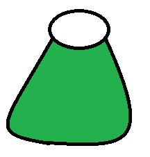
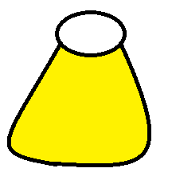

<!DOCTYPE html>
<html>
  <head>
    <meta charset="utf-8">
    <meta name="viewport" content="initial-scale=1, maximum-scale=1, user-scalable=no, width=device-width">
    <title></title>

    <link href="lib/ionic/css/ionic.css" rel="stylesheet">
    <link href="css/style.css" rel="stylesheet">

    <!-- IF using Sass (run gulp sass first), then uncomment below and remove the CSS includes above
    <link href="css/ionic.app.css" rel="stylesheet">
    -->

    <!-- ionic/angularjs js -->
    <script src="lib/ionic/js/ionic.bundle.js"></script>

    <!-- cordova script (this will be a 404 during development) -->
    <script src="cordova.js"></script>

    <!-- your app's js -->
    <script src="js/app.js"></script>
  </head>

    <!-- 
        USEFUL Ionic:
        http://ionicframework.com/docs/guide/starting.html
        http://ionicframework.com/docs/components/
        http://learn.ionicframework.com/formulas/navigation-and-routing-part-1/
        
        USEFUL AngularJS:
        https://www.youtube.com/watch?v=tnXO-i7944M
        https://docs.angularjs.org/tutorial/step_00
        -->

  <body ng-app="starter">
     
      <!-- The tabs bar at the bottom of the screen-->
       <ion-tabs class="tabs-positive">
          <ion-tab icon="ion-home" ui-sref="state_HomeViewDisplayed">
              <ion-nav-view name="name_Home"></ion-nav-view>
          </ion-tab>
          <ion-tab icon="ion-erlenmeyer-flask" ui-sref="state_PotionViewDisplayed">
              <ion-nav-view name="name_PotionView"></ion-nav-view>
          </ion-tab>
      </ion-tabs>


      <!-- The potion view, displays some potion images as list-->
      <script type="text/ng-template" id="potionView.html">
          <ion-view>
              <a class="item item-thumbnail-left" href="#">
                  
                  <h2>Blue Potion</h2>
                  <p>Common</p>
              </a>

              <a class="item item-thumbnail-left" href="#">
                  
                  <h2>Red Potion</h2>
                  <p>Common</p>
              </a>

              <a class="item item-thumbnail-left" href="#">
                  
                  <h2>Green Potion</h2>
                  <p>Common</p>
              </a>

              <a class="item item-thumbnail-left" href="#">
                  
                  <h2>Yellow Potion</h2>
                  <p>Rare</p>
              </a>
          </ion-view>
      </script>

      <!-- The home view, only displays the ionic logo-->
      <script type="text/ng-template" id="homeView.html">
          <ion-view>
              
          </ion-view>
      </script>

  </body>
</html>
